Фундаментальная
база
- Магистр психологии НИУ ВШЭ
- 2 высших образования в управлении бизнесом
- Член Ассоциации бизнес-психологов
- Master coach ICI
Гештальт-терапевт
Бизнес-психолог
Коуч
Индивидуальные консультации в Москве и онлайн по всему миру.
Записаться на консультациюЯ не даю готовых советов и не оцениваю вас. Регулярная личная терапия, супервизия и постоянное обучение гарантируют вам безопасность, конфиденциальность и мое устойчивое состояние в работе с вами.
Без шаблонов и универсальных схем: каждую ситуацию исследую с интересом, вниманием и профессиональной глубиной.
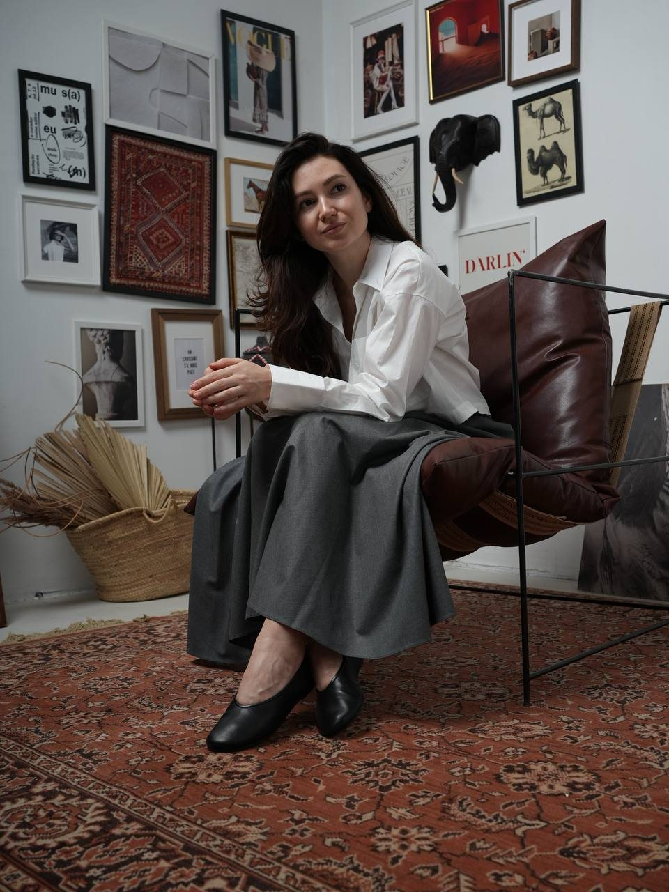
Благодарю своих клиентов за доверие
Конфиденциальность - уважение - честность - профессиональная глубина
Человек не существует однажды и навсегда.
Мы постоянно меняемся, отвечая на вызовы жизни. Мы ищем новые способы жить, любить, работать, строить бизнес и отношения, справляться с кризисами.
Для меня именно в этом проявляется человеческая свобода.
Именно поэтому в своей работе мне важно не переделывать человека.
Мне важно бережно создавать пространство, в котором вы сможете услышать себя, нащупать внутреннюю опору и создать свой собственный, комфортный способ жить и реализовываться в профессии.
Моя база — реляционная гештальт-терапия (итальянская школа М. Спаньоло Лобб). Главный принцип этого метода: человек не существует в изоляции. Мы живем, травмируемся и исцеляемся только в контакте с другим человеком.
Что это дает вам на практике? Наши отношения в терапии становятся безопасным пространством. Это место, где вы можете проработать то, что болит, получить безусловную поддержку и попробовать новые, здоровые способы взаимодействия без страха оценки. А затем — уверенно перенести этот опыт в свою реальную жизнь, в семью и бизнес.
В работе я соединяю этот глубокий метод со взглядом бизнес-психолога. Я не рассматриваю проблему точечно, а работаю системно, в связке «мысли — чувства — тело», и смотрю на вашу жизнь через три уровня:
ваше внутреннее состояние, смыслы и опоры
то, как вы выстраиваете связь с людьми, семьей, коллегами
ваша карьера, проекты и та среда, которую вы создаете
От того, в каком состоянии находитесь вы, напрямую зависят ваши отношения с окружающими и ваша реализация в мире. Я помогаю улучшить качество вашей жизни и отношений, а также раскрыть новые возможности для самореализации.
Короткий аудио-звонок, чтобы познакомиться, прояснить вашу ситуацию, ответить на организационные вопросы и понять, комфортно ли нам будет работать вместе. Это бесплатно и ни к чему вас не обязывает.
Не обязательно приходить с готовым запросом — если его пока нет, мы уделим этому время на первой встрече.
Написать в Telegramразобраться в ситуации
50 минут - 6 000 ₽
Краткосрочная работа, направленная на преодоление жизненного или профессионального кризиса, разрешение конкретной ситуации или работу с отдельными психологическими симптомами.
Если сомневаетесь в формате, мы подберем нужный на ознакомительном звонке. Вы можете завершить работу в любой момент, как только почувствуете, что вам достаточно.
Записатьсяразобраться в себе
50 минут - 6 000 ₽
Долгосрочная работа с регулярными встречами, направленная не только на решение конкретного запроса, но и на исследование его глубинных причин.
Такой формат помогает лучше понимать себя, свои чувства и потребности, замечать привычные модели поведения и создавать устойчивые изменения в жизни, повышая ее качество.
По мере работы растет осознанность, а вместе с ней — свобода выбора, способность самостоятельно справляться с жизненными трудностями и проявлять себя.
Продолжительность работы определяется индивидуально.
Если сомневаетесь в формате, мы подберем нужный на ознакомительном звонке. Вы можете завершить работу в любой момент, как только почувствуете, что вам достаточно.
Записатьсядвигаться к цели
75 минут - 9 000 ₽
Формат подходит, когда основная задача - сфокусироваться на развитии, принятии решений и достижении конкретного результата.
Если сомневаетесь в формате, мы подберем нужный на ознакомительном звонке. Вы можете завершить работу в любой момент, как только почувствуете, что вам достаточно.
Записаться«Поймай баланс» — это психологическая трансформационная игра, основанная на модели колеса жизненного баланса.
Она помогает остановиться, посмотреть на свою жизнь со стороны и честно оценить, что происходит.
Это глубокая психологическая работа для тех, кто хочет расти профессионально и финансово. В группе мы не обсуждаем маркетинг — мы работаем с мышлением, негативными финансовыми сценариями и страхами, которые мешают вам двигаться вперед.
Вы попадете в безопасное пространство людей со схожими амбициями. Группа работает как мощное зеркало: вы ясно увидите свои слепые зоны, поймете, как именно ваши отношения с деньгами блокируют вашу реализацию, и сможете выстроить новые, бережные к себе стратегии прямо в процессе работы.
Чтобы группа была максимально эффективной и безопасной, набор проходит через короткое бесплатное онлайн-знакомство со мной.
Записаться на знакомствоРазвивать людей, команды и организацию
Подробнее об услугах для компаний — на сайте бизнес-профиль.рф
Обсудить задачуМагистратура «Психология в бизнесе», НИУ ВШЭ
Гештальт-терапевт, психолог-консультант, Институт практической психологии «Личность в бизнесе»
Системное психологическое бизнес-консультирование и профессиональный коучинг, РУДН
Master coach ICI
Коучинг международного уровня, ICF
Психоанализ и психоаналитическое бизнес-консультирование, НИУ ВШЭ
Повышение квалификации, международные семинары: Манфред Кетс де Врис, Стивен Бентон, Стивен Армстронг, доктор Вернер Реген и др.
Два высших образования в области управления бизнесом, РГГУ
гештальт терапевт
бизнес-психолог
коуч
сооснователь и генеральный директор бизнес-психологической консалтинговой компании «Бизнес-профиль»
предприниматель
в государственных структурах и крупных компаниях: энергетика, нефтегазовый сектор, включая работу в тесном взаимодействии с первыми лицами, топ-менеджментом и сопровождение управленческих процессов. Помощник первых лиц, методолог, руководитель проектов, преподаватель.
Здесь вы не найдете отзывов клиентов, с которыми я работаю в индивидуальном формате. Конфиденциальность — основа моей работы и необходимое условие доверия и безопасности.
В этом разделе представлены благодарственные письма и отзывы организаций, с которыми я сотрудничала.
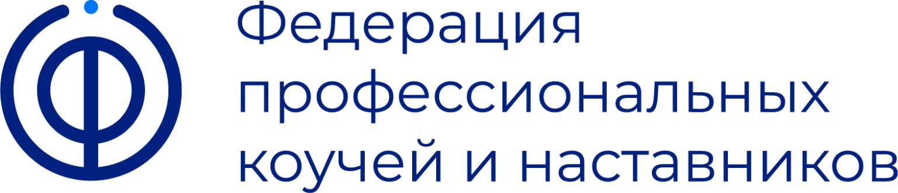
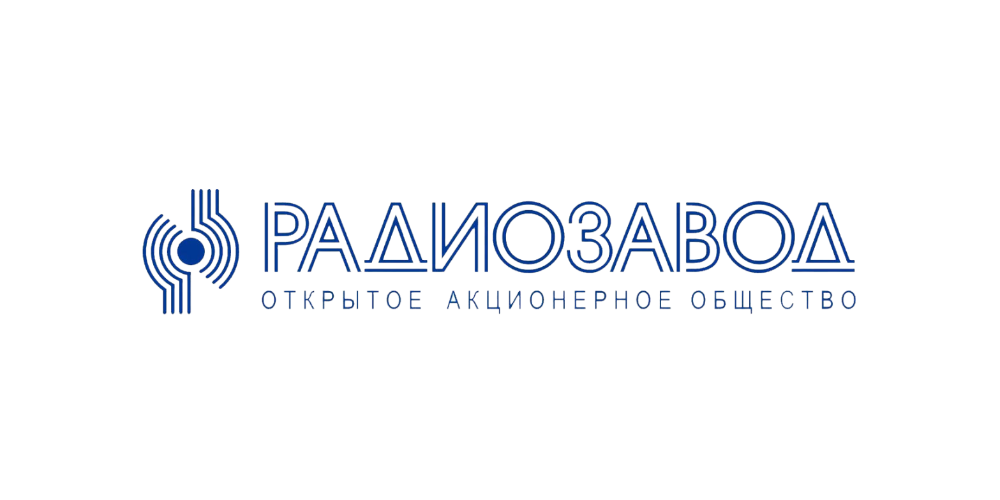
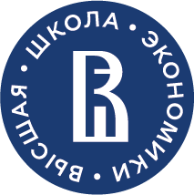
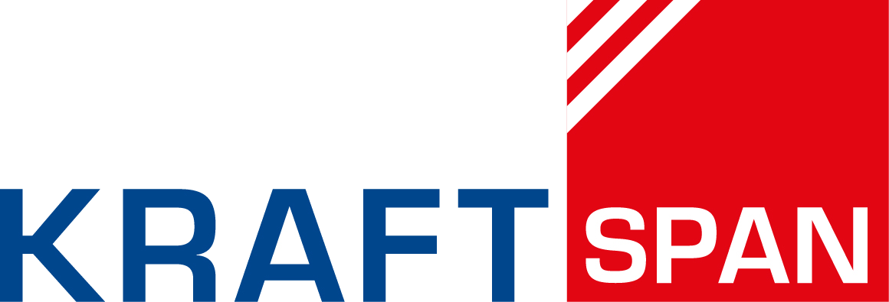
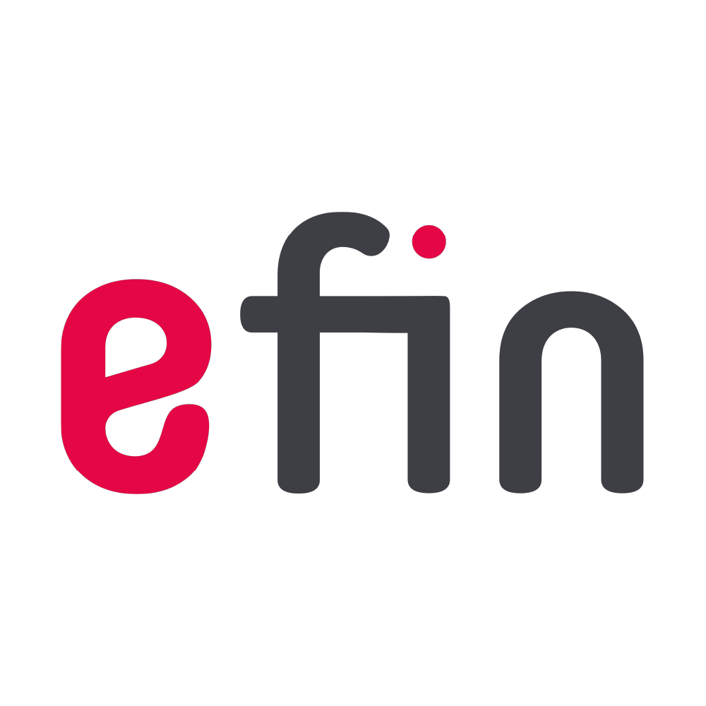
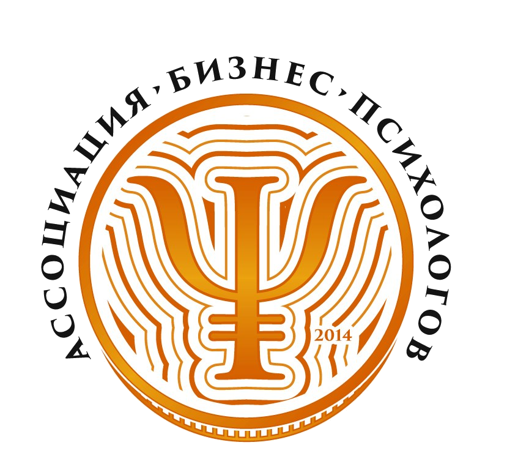
Кроме психологии и бизнеса, в моей жизни есть пространство для творческой свободы. Я на собственном опыте знаю, что значит выходить за привычные рамки: я пишу песни — от личных проектов до гимна для детского садика моей дочки, и снимаюсь в кино (однажды короткометражка с моим участием даже победила на конкурсе МХТ).
Этот опыт помогает мне видеть в человеке не только проблему, с которой он приходит, но и его потенциал, способности и возможности для развития.
Именно поэтому я так глубоко верю, что каждый человек способен творить: не только искусство, но и свою жизнь.
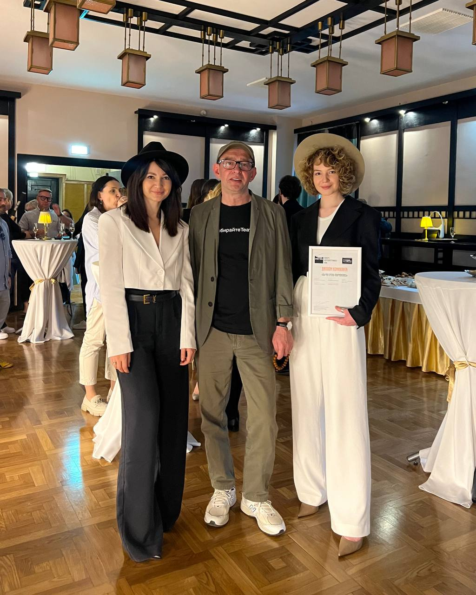
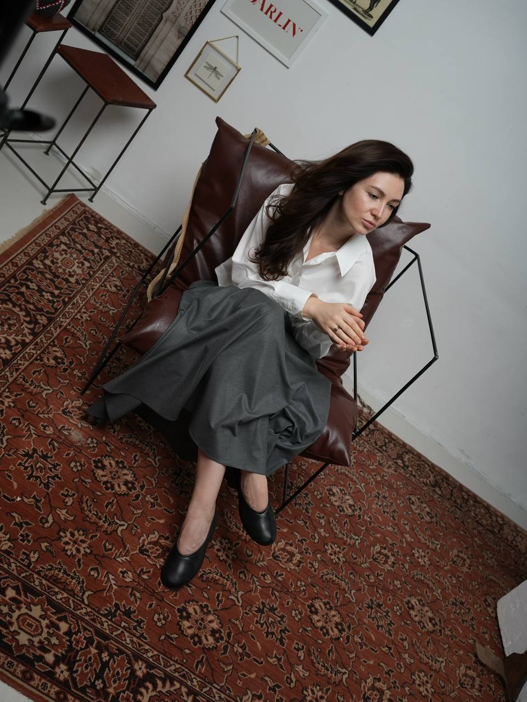
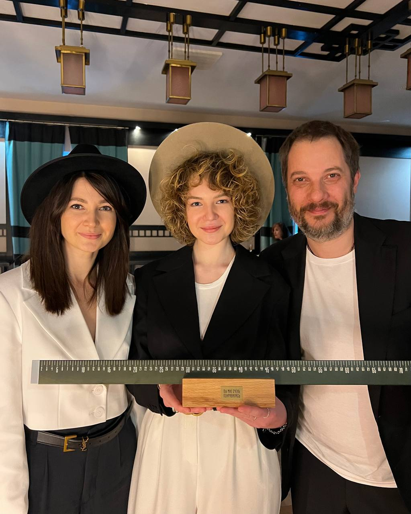
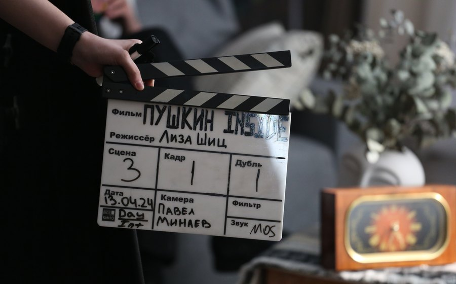
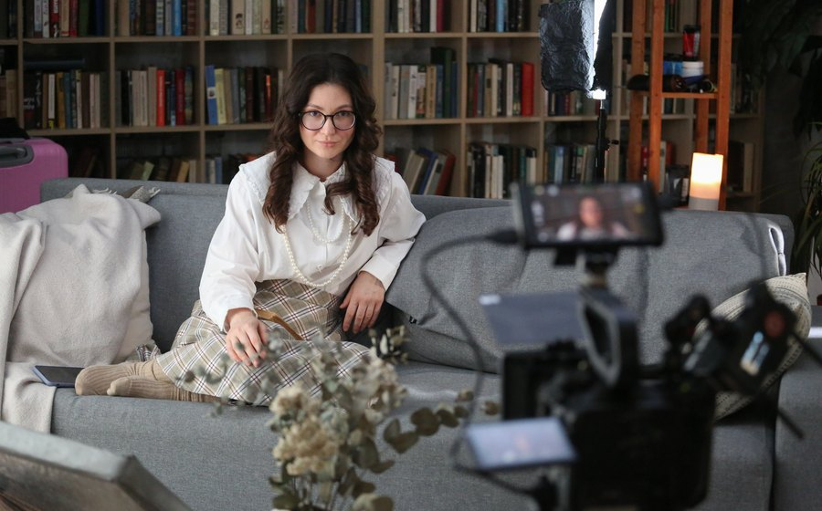
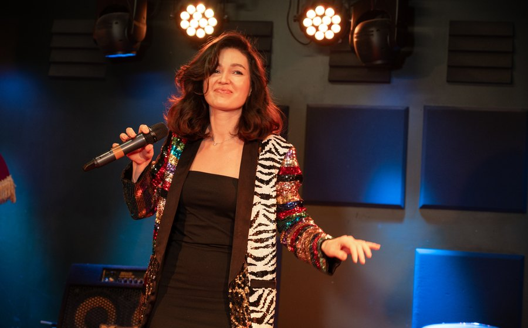
Консультация проходит очно в моем кабинете в Москве или онлайн.
Первичная консультация и индивидуальный коучинг длятся 75 минут.
Психологическое консультирование и психотерапевтическая сессия - 50 минут.
Это зависит от задач, которые вы ставите перед собой. Формат определяется на первой консультации. Работа завершается тогда, когда вы понимаете, что получили необходимый для себя результат.
Можно заранее определить для себя проблему или вопрос, который вас волнует. Если четкого запроса нет - можно будет сформулировать его на первой встрече.
Я работаю в рамках немедицинской психотерапии, психологического консультирования и коучинга.
В случаях, когда необходима медицинская помощь или медикаментозное лечение, я могу порекомендовать консультацию врача-психиатра или другого профильного специалиста. Часто наилучший результат дает именно сочетание такой помощи с психотерапией.
Вероника Галанова
Гештальт-терапевт
Бизнес-психолог
Коуч
Индивидуальные консультации в Москве и онлайн